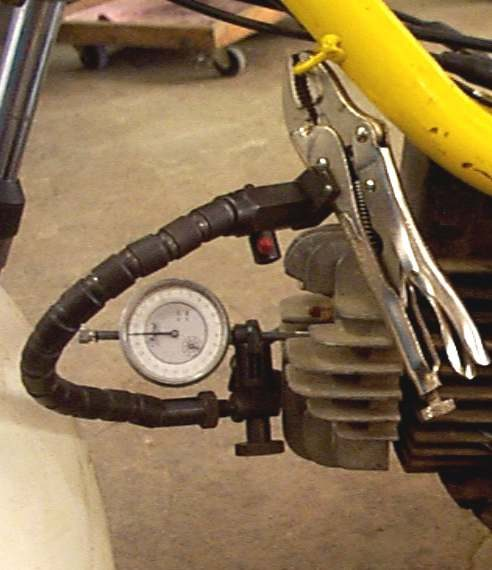
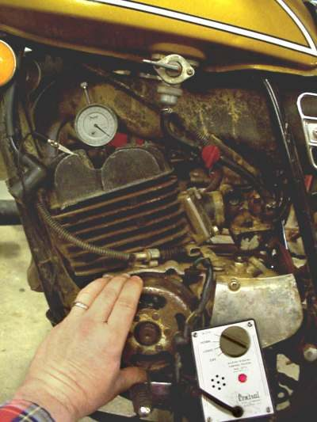
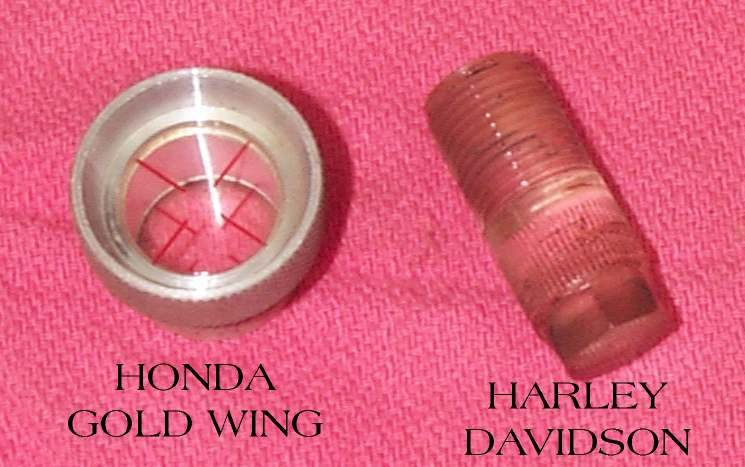
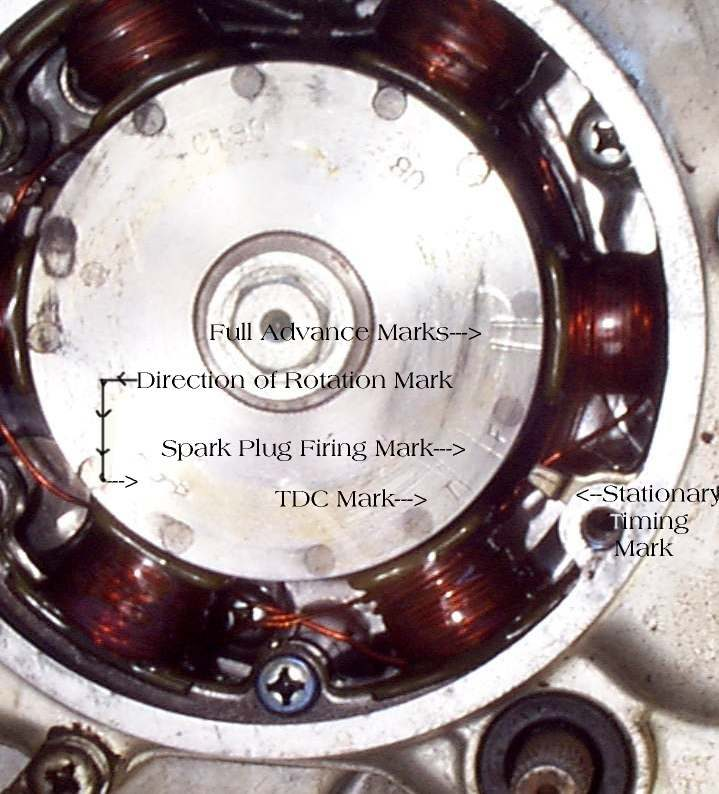
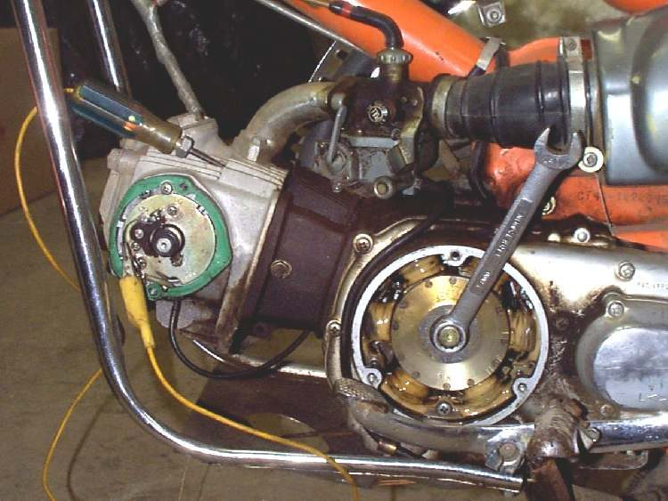
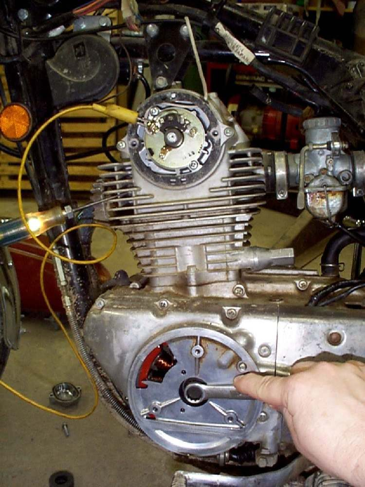

Ignition timing is how far before top dead centre (TDC, the piston's highest point) the spark fires. On modern CDI and ECU bikes it is set by the electronics and cannot be adjusted. The K-Light 125 timing is fixed in the ECU map (PDF page 85). So a timing check is a diagnostic test: if the marks are wrong, something has moved or failed. It is a workshop job because it needs a timing light and an engine running with covers open.
Safety
- Run the engine outdoors only.
- Keep the timing light leads, hands and hair away from the chain, wheel and fan.
- The rotor behind the timing hole spins fast. Never put anything into the hole while the engine runs.
What you can check at home
- A sudden change after engine work, a crash on the left side, or a new CDI points to timing. Ask the workshop for this test.
- Signs of wrong timing: kickback when kick starting, popping or backfire on starting, pinking (rattle) under load, overheating, low power. These have other causes too, so check the simpler ones first.
- Check the pick-up wiring and resistance: Test the ignition pick-up.
What the workshop will do
- Remove the timing hole cap on the left engine cover.
- Find the marks on the flywheel: usually "T" for TDC and "F" for the firing mark at idle, read against a fixed line on the cover (MAVCC). Mark the "F" with chalk.
- Connect the timing light to the plug lead and battery.
- Start the engine and set it to the test speed. K-Light 125: 15° ± 1° before TDC at 1500 ± 100 rpm (idle).
- Shine the light at the hole. The "F" mark should line up with the fixed line.
- Rev the engine: on bikes with an advance mark, the line should move into the advance range at higher revs.
- If the timing is wrong on a fixed-timing bike, look for the cause, not an adjustment: - A sheared flywheel key (the small key that locates the flywheel on the crankshaft). - A loose flywheel or loose pick-up. The K-Light 125 manual lists a loose flywheel or trigger as a timing cause, and a loose "timing gear ring" (reluctor ring) as a cause of backfire on starting (PDF page 276). - A wrong or faulty CDI or ECU, or a wrong aftermarket unit.
- On older bikes with an adjustable base plate, the workshop may turn the plate as the manual describes. Do not apply this to a bike whose timing is fixed.
Ask for: the timing reading, the speed it was read at, and the cause if it was wrong.
Check your work
- Marks line up at the stated speed; no kickback, pinking or backfire.
If it did not fix the problem
- Timing correct but the engine still pinks: check fuel quality and mixture. See Pinging or rattling sound when accelerating (pinking).
Reference values (K-Light 125)
| Item | Value | PDF page |
|---|---|---|
| Ignition timing | 15° ± 1° BTDC at 1500 ± 100 rpm | 49 |
| Idle speed | 1500 ± 100 rpm | 49 |